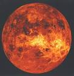

Venus

Venus is the second planet according to the distance from the sun. It is the closest planet to the earth.
Venus is the second planet from the Sun. It is sometimes called Earth's "sister" or "twin" planet as it is almost as large and has a similar composition. As an
interior planet to Earth, Venus (like Mercury) appears in Earth's sky never far from the Sun, either as morning star or evening star. Aside from the Sun and Moon,
Venus is the brightest natural object in Earth's sky, capable of casting visible shadows on Earth at dark conditions and being visible to the naked eye in broad
daylight.
Venus is the second largest terrestrial object of the Solar System. It has a surface gravity slightly lower than on Earth and has a very weak induced magnetosphere.
The atmosphere of Venus, mainly consists of carbon dioxide, and is the densest and hottest of the four terrestrial planets at the surface. With an atmospheric pressure
at the planet's surface of about 92 times the sea level pressure of Earth and a mean temperature of 737 K (464 °C; 867 °F), the carbon dioxide gas at Venus's surface
is in the supercritical phase of matter.
Venus is shrouded by an opaque layer of highly reflective clouds of sulfuric acid, making it the planet with the highest
albedo in the Solar System. It may have had water oceans in the past,but after these evaporated the temperature rose under a runaway greenhouse effect.
The possibility of life on Venus has long been a topic of speculation but convincing evidence has yet to be found.
Like Mercury, Venus does not have any moons. Solar days on Venus, with a length of 117 Earth days, are just about half as long as its solar year, orbiting the
Sun every 224.7 Earth days. This Venusian daylength is a product of it rotating against its orbital motion, halving its full sidereal rotation period of 243 Earth
days, the longest of all the Solar System planets. Venus and Uranus are the only planets with such a retrograde rotation, making the Sun move in their skies from their
western horizon to their eastern.
The orbit of Venus around the Sun is the closest to Earth's orbit, allowing them to approach each other at inferior conjunction closer
than any other planet, at a synodic period of 1.6 years, while Mercury approaches them more often the closest. The close orbit of Venus and Earth furthermore results
in the lowest gravitational potential difference and lowest delta-v needed to transfer from them to any other planet
Internal Structure
Venus has an extremely dense atmosphere composed of 96.5% carbon dioxide, 3.5% nitrogen—both exist as supercritical fluids at the planet's surface—and traces of other
gases including sulfur dioxide. The mass of its atmosphere is 92 times that of Earth's, whereas the pressure at its surface is about 93 times that at Earth's—a pressure
equivalent to that at a depth of nearly 1 km(5⁄8 mi) under Earth's oceans. The density at the surface is 65 kg/m3 (4.1 lb/cu ft), 6.5% that of water or 50 times as dense
as Earth's atmosphere at 293 K (20 °C; 68 °F) at sea level.

The CO2-rich atmosphere generates the strongest greenhouse effect in the
Solar System, creating surface temperatures of at least 735 K (462 °C; 864 °F). This makes the Venusian surface hotter than Mercury's, which has a minimum surface
temperature of 53 K (−220 °C; −364 °F) and maximum surface temperature of 700 K (427 °C; 801 °F),even though Venus is nearly twice Mercury's distance from the Sun and
thus receives only 25% of Mercury's solar irradiance. Becauseof its runaway greenhouse effect, Venus has been identified by scientists such as Carl Sagan as a warning and
research object linked to climate change on Earth.
Venus's atmosphere is extremely rich in primordial noble gases compared to that of Earth. This enrichment indicates an early divergence from Earth in evolution. An
unusually large comet impact or accretion of a more massive primary atmosphere from solar nebula have been proposed to explain the enrichment. However, the atmosphere is
also depleted of radiogenic argon, a proxy tomantle degassing, suggesting an early shutdown of major magmatism.
Studies[which?] have suggested that billions of years ago, Venus's atmosphere could have been much more like the one surrounding the early Earth, and that there may have
been substantial quantities of liquid water on the surface. After a period of 600 millionto several billion years, solar forcing from rising luminosity of the Sun caused
the evaporation of the original water. A runaway greenhouse effect was created once a critical level of greenhouse gases (including water) was added to its atmosphere.
Although the surface conditions on Venus are no longer hospitable to any Earth-like life that may have formed before this event, there is speculation on the possibility
that life exists in the upper cloud layers of Venus, 50 km (30 mi) up from the surface, where the temperature ranges between 303 and 353 K (30 and 80 °C; 86 and 176 °F)
but the environment is acidic. The putative detection of an absorption line of phosphine in Venus's atmosphere, with no known pathway for abiotic production, led to
speculation in September 2020 that there could be extant life currently present in the atmosphere. Later research attributed the spectroscopic signal that was
interpreted as phosphine to sulfur dioxide, or found that in fact there was no absorption line.
Thermal inertia and the transfer of heat by winds in the lower atmosphere mean that the temperature of Venus's surface does not vary significantly between the planet's
two hemispheres, those facing and not facing the Sun, despite Venus's extremely slow rotation. Winds at the surface are slow, moving at a few kilometres per hour, but
because of the high density of the atmosphere at the surface, they exert a significant amount of force against obstructions, and transport dust and small stones across
the surface.This alone would make it difficult for a human to walk through, even without the heat, pressure, and lack of oxygen
Atmosphere and Climate
 Without seismic data or knowledge of its moment of inertia, little direct information is available about the internal structure and geochemistry of Venus. The similarity
in size and density between Venus and Earth suggests they share a similar internal structure: a core, mantle, and crust. Like that of Earth, the Venusian core is most
likely at least partially liquid because the two planets have been cooling at about the same rate, although a completely solid core cannot be ruled out. The slightly
smaller size of Venus means pressures are 24% lower in its deep interior than Earth's. The predicted values for the moment of inertia based on planetary models suggest a
core radius of 2,900–3,450 km. This is in line with the first observation-based estimate of 3,500 km.
Without seismic data or knowledge of its moment of inertia, little direct information is available about the internal structure and geochemistry of Venus. The similarity
in size and density between Venus and Earth suggests they share a similar internal structure: a core, mantle, and crust. Like that of Earth, the Venusian core is most
likely at least partially liquid because the two planets have been cooling at about the same rate, although a completely solid core cannot be ruled out. The slightly
smaller size of Venus means pressures are 24% lower in its deep interior than Earth's. The predicted values for the moment of inertia based on planetary models suggest a
core radius of 2,900–3,450 km. This is in line with the first observation-based estimate of 3,500 km.
The principal difference between the two planets is the lack of evidence for plate tectonics on Venus, possibly because its crust is too strong to subduct without water
to make it less viscous. This results in reduced heat loss from the planet, preventing it from cooling and providing a likely explanation for its lack of an internally
generated magnetic field. Instead, Venus may lose its internal heat in periodic major resurfacing events.